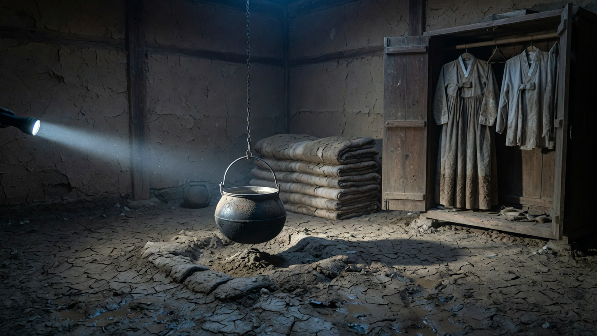
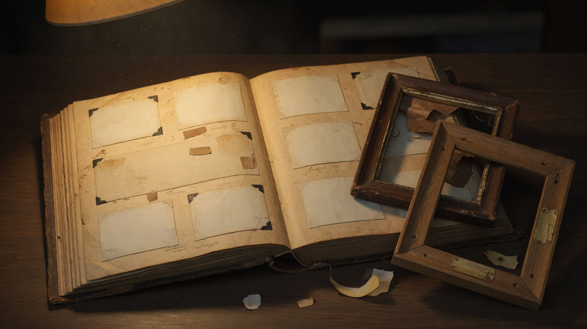

<!doctype html>
<html lang="ko" data-composition-variables='[{"id":"offset","type":"number","label":"Segment offset seconds","default":0}]'>
  <head>
    <meta charset="utf-8">
    <meta name="viewport" content="width=device-width, initial-scale=1">
    <link rel="icon" href="data:,">
    <title>소흔리에서 종이 울렸다 - YouTube</title>
    <style>
      :root {
        --black: #05070d;
        --navy: #0b1730;
        --mid: #172b4d;
        --ice: #f5f7ff;
        --muted: #9aa7ba;
        --red: #ff4d5f;
        --mud: #3a3128;
        --amber: #e8a33d;
      }
      * { box-sizing: border-box; }
      html, body { width: 100%; height: 100%; margin: 0; overflow: hidden; background: #000; }
      body { font-family: Arial, sans-serif; color: var(--ice); }
      #master {
        position: relative;
        width: 1920px;
        height: 1080px;
        overflow: hidden;
        isolation: isolate;
        background: #000;
      }
      .clip { visibility: hidden; opacity: 0; }
      .scene {
        position: absolute;
        inset: 0;
        overflow: hidden;
        background: var(--black);
      }
      .scene-image {
        position: absolute;
        inset: -4%;
        width: 108%;
        height: 108%;
        opacity: 0;
        object-fit: cover;
        filter: saturate(.78) contrast(1.12) brightness(.84);
        will-change: transform, filter;
      }
      .scene-scrim {
        position: absolute;
        inset: 0;
        background:
          radial-gradient(circle at 50% 44%, transparent 18%, rgba(2, 4, 10, .2) 58%, rgba(2, 4, 10, .56) 100%),
          linear-gradient(180deg, rgba(0, 0, 0, .2), transparent 26%, transparent 68%, rgba(0, 0, 0, .62));
        pointer-events: none;
      }
      .scene-glow {
        position: absolute;
        width: 720px;
        height: 720px;
        right: -180px;
        top: -220px;
        border-radius: 50%;
        background: radial-gradient(circle, rgba(44, 100, 158, .2), transparent 68%);
        mix-blend-mode: screen;
        filter: blur(8px);
        pointer-events: none;
      }
      .grain {
        position: absolute;
        inset: 0;
        opacity: .16;
        background-image:
          repeating-radial-gradient(circle at 17% 23%, rgba(255,255,255,.25) 0 1px, transparent 1px 4px),
          repeating-radial-gradient(circle at 73% 67%, rgba(255,255,255,.12) 0 1px, transparent 1px 5px);
        background-size: 11px 13px, 17px 19px;
        mix-blend-mode: overlay;
        pointer-events: none;
      }
      .mist {
        position: absolute;
        left: -20%;
        bottom: -190px;
        width: 140%;
        height: 420px;
        opacity: .22;
        background: radial-gradient(ellipse, rgba(146, 178, 205, .3), transparent 68%);
        filter: blur(38px);
        pointer-events: none;
      }
      .scanline {
        position: absolute;
        left: 0;
        right: 0;
        top: -90px;
        height: 78px;
        opacity: 0;
        background: linear-gradient(180deg, transparent, rgba(199, 225, 245, .1), transparent);
        mix-blend-mode: screen;
        pointer-events: none;
      }
      .film-bar {
        position: absolute;
        left: 0;
        right: 0;
        z-index: 20;
        height: 42px;
        background: #000;
      }
      .film-bar.top { top: 0; }
      .film-bar.bottom { bottom: 0; }
      .progress-line {
        position: absolute;
        left: 0;
        bottom: 42px;
        z-index: 21;
        width: 100%;
        height: 3px;
        transform-origin: left center;
        background: linear-gradient(90deg, var(--red), rgba(255, 77, 95, .08));
        opacity: .55;
      }
      .overlay {
        position: absolute;
        inset: 0;
        z-index: 6;
        pointer-events: none;
      }
      .overlay .panel {
        position: absolute;
        left: 140px;
        right: 140px;
        top: 92px;
        bottom: 168px;
        padding: 36px 44px;
        background: linear-gradient(180deg, rgba(5, 7, 13, .62), rgba(11, 23, 48, .78));
        border: 1px solid rgba(245, 247, 255, .1);
        box-shadow: 0 24px 80px rgba(0, 0, 0, .45);
      }
      .overlay .panel.slim {
        left: 160px;
        right: 160px;
        top: 120px;
        bottom: 190px;
      }
      .kicker {
        font-size: 22px;
        letter-spacing: .18em;
        color: var(--muted);
        margin-bottom: 14px;
      }
      .claim {
        font-size: 64px;
        line-height: 1.12;
        font-weight: 700;
        letter-spacing: -.02em;
      }
      [data-overlay="chart"] .claim { opacity: 0; }
      .claim .red { color: var(--red); }
      .subclaim {
        margin-top: 16px;
        font-size: 28px;
        color: var(--muted);
      }
      .stat {
        position: absolute;
        right: 160px;
        top: 120px;
        font-size: 120px;
        font-weight: 800;
        letter-spacing: -.04em;
        color: var(--ice);
        text-shadow: 0 8px 40px rgba(0, 0, 0, .55);
        opacity: 0;
      }
      .stat.red { color: var(--red); }
      .stat.amber { color: var(--amber); }
      svg.chart {
        width: 100%;
        height: 520px;
        display: block;
      }
      .map-wrap {
        position: relative;
        width: 100%;
        height: 620px;
        overflow: hidden;
        background: #12100c;
        border: 1px solid rgba(245,247,255,.08);
      }
      .map-grid {
        position: absolute;
        inset: 0;
        background-image:
          linear-gradient(rgba(245,247,255,.07) 1px, transparent 1px),
          linear-gradient(90deg, rgba(245,247,255,.07) 1px, transparent 1px);
        background-size: 72px 72px;
      }
      .house-block {
        position: absolute;
        background: #6b5a46;
        box-shadow: inset 0 0 0 1px rgba(0,0,0,.35);
      }
      .flood {
        position: absolute;
        left: 0;
        right: 0;
        bottom: 0;
        height: 0;
        background: linear-gradient(180deg, rgba(23, 68, 120, .55), rgba(11, 23, 48, .88));
      }
      .name-col, .compare-col {
        display: grid;
        gap: 10px;
      }
      .name-row, .ledger-row {
        display: grid;
        grid-template-columns: 80px 1fr 120px 160px;
        gap: 18px;
        align-items: center;
        padding: 12px 8px;
        border-bottom: 1px solid rgba(245,247,255,.08);
        font-size: 28px;
        opacity: 0;
      }
      .stamp-grid {
        display: grid;
        grid-template-columns: repeat(7, 1fr);
        gap: 10px;
        width: 100%;
      }
      .stamp {
        aspect-ratio: 1;
        border: 2px solid rgba(255, 77, 95, .35);
        color: var(--red);
        display: grid;
        place-items: center;
        font-size: 15px;
        letter-spacing: .04em;
        opacity: 0;
        transform: scale(.86);
      }
      .cal-row {
        display: grid;
        grid-template-columns: repeat(3, 1fr);
        gap: 28px;
      }
      .cal {
        background: rgba(245,247,255,.04);
        padding: 18px 16px 22px;
        opacity: 0;
      }
      .cal h3 { margin: 0 0 12px; font-size: 24px; font-weight: 600; }
      .cal-days {
        display: grid;
        grid-template-columns: repeat(7, 1fr);
        gap: 6px;
        font-size: 18px;
        text-align: center;
      }
      .cal-days span { padding: 6px 0; color: var(--muted); }
      .cal-days .mark {
        color: var(--ice);
        box-shadow: inset 0 0 0 1.5px rgba(245,247,255,.45);
      }
      .cal-days .stop {
        color: var(--red);
        box-shadow: inset 0 0 0 2px var(--red);
        font-weight: 700;
      }
      .wave-row { display: grid; gap: 18px; }
      .wave {
        height: 48px;
        position: relative;
        background: rgba(245,247,255,.03);
        overflow: hidden;
      }
      .wave i {
        position: absolute;
        top: 8px;
        width: 8px;
        height: 32px;
        background: var(--ice);
        opacity: 0;
      }
      .hub {
        position: relative;
        height: 620px;
      }
      .hub-node {
        position: absolute;
        min-width: 280px;
        padding: 22px 26px;
        background: rgba(5,7,13,.72);
        border: 1px solid rgba(245,247,255,.16);
        font-size: 28px;
        opacity: 0;
      }
      .hub-line {
        position: absolute;
        height: 2px;
        background: var(--red);
        transform-origin: left center;
        transform: scaleX(0);
      }
      .exodus-grid {
        display: grid;
        grid-template-columns: repeat(7, 1fr);
        gap: 14px;
      }
      .plot {
        height: 86px;
        background: rgba(58, 49, 40, .55);
        border: 1px solid rgba(245,247,255,.08);
        position: relative;
        overflow: hidden;
      }
      .plot .body, .plot .paper {
        position: absolute;
        inset: 18px 16px;
      }
      .plot .body {
        background: rgba(154, 167, 186, .35);
        clip-path: polygon(30% 8%, 70% 8%, 82% 100%, 18% 100%);
      }
      .plot .paper {
        background: rgba(245,247,255,.82);
        inset: 28px 22px 18px;
      }
      .plot.empty { outline: 2px solid var(--red); }
      .letter {
        position: absolute;
        left: 220px;
        right: 220px;
        top: 180px;
        font-size: 40px;
        line-height: 1.7;
        color: var(--ice);
      }
      .letter p { margin: 0 0 10px; opacity: 0; }
      .letter .last { color: var(--red); }
      .waterline {
        position: absolute;
        left: 0;
        right: 0;
        height: 6px;
        background: var(--red);
        box-shadow: 0 0 18px rgba(255, 77, 95, .55);
        opacity: 0;
      }
      .ripple {
        position: absolute;
        left: 50%;
        top: 58%;
        width: 40px;
        height: 40px;
        border: 2px solid rgba(245,247,255,.55);
        border-radius: 50%;
        transform: translate(-50%, -50%) scale(.2);
        opacity: 0;
      }
      .card-row {
        position: absolute;
        left: 140px;
        right: 140px;
        top: 180px;
        bottom: 180px;
        display: grid;
        grid-template-columns: repeat(3, 1fr);
        gap: 24px;
      }
      .photo-card {
        overflow: hidden;
        opacity: 0;
        border: 1px solid rgba(245,247,255,.1);
      }
      .photo-card img {
        width: 100%;
        height: 100%;
        object-fit: cover;
        filter: saturate(.78) contrast(1.1) brightness(.82);
      }
      .table {
        width: 100%;
        border-collapse: collapse;
        font-size: 30px;
      }
      .table th, .table td {
        text-align: left;
        padding: 16px 14px;
        border-bottom: 1px solid rgba(245,247,255,.1);
      }
      .table th { color: var(--muted); font-weight: 500; font-size: 22px; letter-spacing: .08em; }
      .fresh { color: var(--ice); }
      .cert {
        position: absolute;
        right: 150px;
        top: 150px;
        width: 620px;
        padding: 36px 40px 40px;
        background: rgba(245,247,255,.92);
        color: #1b140e;
        opacity: 0;
      }
      .cert h3 { margin: 0 0 16px; font-size: 30px; }
      .cert p { margin: 0 0 10px; font-size: 24px; }
      .cert .seal {
        margin-top: 22px;
        width: 92px;
        height: 92px;
        border: 4px solid var(--red);
        color: var(--red);
        border-radius: 50%;
        display: grid;
        place-items: center;
        font-size: 20px;
        font-weight: 700;
      }
      .latch {
        position: absolute;
        left: 150px;
        bottom: 180px;
        width: 560px;
        padding: 24px 28px;
        background: rgba(5,7,13,.78);
        border: 1px solid rgba(245,247,255,.12);
        opacity: 0;
      }
      .latch strong { color: var(--red); }
    </style>
  </head>
  <body>
    <div id="master" data-composition-id="youtube-master" data-start="0" data-duration="1029.819" data-width="1920" data-height="1080">
      <audio id="voice" data-start="0" data-duration="1029.819" data-track-index="0" src="assets/audio/voice.wav" data-volume="1"></audio>
      <div id="scene-host"></div>
      <div class="film-bar top"></div>
      <div class="film-bar bottom"></div>
      <div class="progress-line"></div>
    </div>
    <script src="https://cdn.jsdelivr.net/npm/gsap@3.12.5/dist/gsap.min.js"></script>
    <script src="scene-data.js"></script>
    <script>
      const DURATION = 1029.819;
      function segmentOffset() {
        try {
          const vars = window.__hyperframes && window.__hyperframes.getVariables && window.__hyperframes.getVariables();
          const n = Number(vars && vars.offset);
          return Number.isFinite(n) ? n : 0;
        } catch (err) {
          return 0;
        }
      }
      const OFFSET = segmentOffset();
      const at = (sec) => sec - OFFSET;
      const NAMES = ["김태섭","박순임","오길수","이창호","최명자","한영수","윤정희","송기철","강미경","조병우","임숙자","서재원","안동숙","황철민","노순희","문기남","배점례","신학수","권영희","정필규","유정자","장성호","정혜숙","백남순","홍기태","남정희","심재호","도미자","배진구","차영숙","고병철","변정숙","하준식","옥선희","민태호","편미란","위동석","길영자","방철수","석정임","탁상호","나복순"];
      const visualSequences = {
        S01: [
          { src: "assets/visuals/village-revealed-wide.png", focus: "42% 58%", zoom: 1.18, x: 0, y: 6 },
          { src: "assets/visuals/village-revealed-wide.png", focus: "58% 48%", zoom: 1.08, x: 0 },
          { src: "assets/visuals/bell-tower-base.png", focus: "50% 62%", zoom: 1.16, x: 0, y: 4 }
        ],
        S02: [{ src: "assets/visuals/village-revealed-wide.png", focus: "50% 48%", zoom: 1.08 }],
        S03: [{ src: "assets/visuals/village-revealed-wide.png", focus: "46% 52%", zoom: 1.1 }],
        S04: [
          { src: "assets/visuals/empty-frames-album.png", focus: "42% 52%", zoom: 1.08 },
          { src: "assets/visuals/empty-frames-album.png", focus: "28% 46%", zoom: 1.48, x: 10 },
          { src: "assets/visuals/empty-frames-album.png", focus: "72% 54%", zoom: 1.56, x: -12 }
        ],
        S05: [
          { src: "assets/visuals/living-room-august-rain.png", focus: "48% 52%", zoom: 1.06 },
          { src: "assets/visuals/living-room-august-rain.png", focus: "62% 38%", zoom: 1.42, x: -8, y: -4 },
          { src: "assets/visuals/living-room-august-rain.png", focus: "78% 28%", zoom: 1.7, x: -16, y: -8 }
        ],
        S06: [
          { src: "assets/visuals/empty-funeral-hall.png", focus: "50% 50%", zoom: 1.05 },
          { src: "assets/visuals/empty-funeral-hall.png", focus: "72% 72%", zoom: 1.5, y: 8 },
          { src: "assets/visuals/empty-funeral-hall.png", focus: "50% 28%", zoom: 1.42, y: -6 }
        ],
        S07: [
          { src: "assets/visuals/red-notebook.png", focus: "50% 52%", zoom: 1.08 },
          { src: "assets/visuals/red-notebook.png", focus: "62% 48%", zoom: 1.46, x: -6 }
        ],
        S08: [
          { src: "assets/visuals/urn-in-car.png", focus: "62% 62%", zoom: 1.1 },
          { src: "assets/visuals/urn-in-car.png", focus: "28% 38%", zoom: 1.38, x: 8 }
        ],
        S09: [
          { src: "assets/visuals/village-revealed-wide.png", focus: "50% 40%", zoom: 1.04 },
          { src: "assets/visuals/village-revealed-wide.png", focus: "62% 48%", zoom: 1.28, x: -6 },
          { src: "assets/visuals/village-revealed-wide.png", focus: "78% 36%", zoom: 1.56, x: -12 }
        ],
        S10: [
          { src: "assets/visuals/control-post-loudspeaker.png", focus: "28% 38%", zoom: 1.12 },
          { src: "assets/visuals/control-post-loudspeaker.png", focus: "62% 52%", zoom: 1.36, x: -6 },
          { src: "assets/visuals/control-post-loudspeaker.png", focus: "70% 46%", zoom: 1.62, x: -10 }
        ],
        S11: [
          { src: "assets/visuals/control-post-loudspeaker.png", focus: "48% 52%", zoom: 1.18 },
          { src: "assets/visuals/control-post-loudspeaker.png", focus: "50% 58%", zoom: 1.58, y: 4 }
        ],
        S12: [
          { src: "assets/visuals/boots-in-mud.png", focus: "50% 60%", zoom: 1.08 },
          { src: "assets/visuals/boots-in-mud.png", focus: "50% 70%", zoom: 1.42, y: 6 }
        ],
        S13: [
          { src: "assets/visuals/courtyard-jars.png", focus: "50% 55%", zoom: 1.06 },
          { src: "assets/visuals/house-interior-intact.png", focus: "42% 58%", zoom: 1.12 },
          { src: "assets/visuals/house-interior-intact.png", focus: "72% 42%", zoom: 1.46, x: -10 }
        ],
        S14: [{ src: "assets/visuals/house-interior-intact.png", focus: "50% 50%", zoom: 1.06 }],
        S15: [
          { src: "assets/visuals/rice-mill-interior.png", focus: "50% 52%", zoom: 1.08 },
          { src: "assets/visuals/rice-mill-interior.png", focus: "48% 48%", zoom: 1.36 }
        ],
        S16: [{ src: "assets/visuals/village-revealed-wide.png", focus: "70% 40%", zoom: 1.2 }],
        S18: [{ src: "assets/visuals/house-interior-intact.png", focus: "40% 40%", zoom: 1.12 }],
        S20: [{ src: "assets/visuals/observation-tower-gauge.png", focus: "50% 50%", zoom: 1.08 }],
        S17: [
          { src: "assets/visuals/village-well-locked.png", focus: "48% 62%", zoom: 1.1 },
          { src: "assets/visuals/village-well-locked.png", focus: "50% 70%", zoom: 1.48, y: 6 }
        ],
        S19: [
          { src: "assets/visuals/bell-tower-base.png", focus: "50% 58%", zoom: 1.1 },
          { src: "assets/visuals/bell-tower-base.png", focus: "50% 68%", zoom: 1.42, y: 5 }
        ],
        S21: [
          { src: "assets/visuals/figures-leaving-embankment.png", focus: "42% 42%", zoom: 1.08 },
          { src: "assets/visuals/figures-leaving-embankment.png", focus: "36% 34%", zoom: 1.4, x: 6, y: -4 }
        ],
        S22: [
          { src: "assets/visuals/village-hall-documents.png", focus: "58% 62%", zoom: 1.1 },
          { src: "assets/visuals/village-hall-documents.png", focus: "62% 70%", zoom: 1.46, y: 6 }
        ],
        S23: [{ src: "assets/visuals/red-notebook.png", focus: "48% 52%", zoom: 1.12 }],
        S24: [{ src: "assets/visuals/village-hall-documents.png", focus: "55% 60%", zoom: 1.1 }],
        S25: [{ src: "assets/visuals/village-hall-documents.png", focus: "50% 55%", zoom: 1.08 }],
        S26: [
          { src: "assets/visuals/observation-tower-gauge.png", focus: "52% 48%", zoom: 1.06 },
          { src: "assets/visuals/observation-tower-gauge.png", focus: "56% 58%", zoom: 1.38, y: 4 }
        ],
        S27: [{ src: "assets/visuals/red-notebook.png", focus: "52% 48%", zoom: 1.14 }],
        S31: [{ src: "assets/visuals/village-revealed-wide.png", focus: "50% 50%", zoom: 1.06 }],
        S28: [
          { src: "assets/visuals/footprints-on-water.png", focus: "50% 62%", zoom: 1.08 },
          { src: "assets/visuals/footprints-on-water.png", focus: "50% 72%", zoom: 1.42, y: 6 }
        ],
        S29: [
          { src: "assets/visuals/kitchen-forty-two-bowls.png", focus: "50% 55%", zoom: 1.08 },
          { src: "assets/visuals/kitchen-forty-two-bowls.png", focus: "48% 62%", zoom: 1.4, y: 4 }
        ],
        S30: [{ src: "assets/visuals/red-notebook.png", focus: "58% 50%", zoom: 1.18 }],
        S32: [{ src: "assets/visuals/village-revealed-wide.png", focus: "40% 60%", zoom: 1.16, y: 4 }],
        S33: [
          { src: "assets/visuals/chest-deep-water-escape.png", focus: "60% 52%", zoom: 1.1 },
          { src: "assets/visuals/chest-deep-water-escape.png", focus: "70% 48%", zoom: 1.42, x: -8 }
        ],
        S34: [{ src: "assets/visuals/lanterns-under-water.png", focus: "40% 68%", zoom: 1.12, y: 4 }],
        S35: [
          { src: "assets/visuals/urn-in-car.png", focus: "60% 58%", zoom: 1.08 },
          { src: "assets/visuals/red-notebook.png", focus: "55% 50%", zoom: 1.22 }
        ]
      };

      function houses() {
        const boxes = [
          [8,18,10,12],[22,16,12,10],[38,20,9,11],[52,14,14,12],[70,18,11,10],[84,16,9,12],
          [12,38,11,10],[28,36,10,12],[46,40,13,9],[64,38,10,11],[80,42,12,9],
          [16,58,12,10],[34,56,9,12],[50,60,14,10],[68,58,11,11],[84,62,8,9]
        ];
        return boxes.map(([l,t,w,h]) => `<div class="house-block" style="left:${l}%;top:${t}%;width:${w}%;height:${h}%"></div>`).join("");
      }

      function calendarMarkup(label) {
        const cells = [];
        const pad = 4;
        for (let i = 0; i < pad; i += 1) cells.push("<span></span>");
        for (let d = 1; d <= 31; d += 1) {
          const cls = d === 14 ? "stop" : (d <= 14 ? "mark" : "");
          cells.push(`<span class="${cls}">${d <= 14 ? d : ""}</span>`);
        }
        return `<div class="cal"><h3>${label}</h3><div class="cal-days">${cells.join("")}</div></div>`;
      }

      function overlayMarkup(scene) {
        switch (scene.overlay) {
          case "chart":
            return `<div class="overlay" data-overlay="chart">
              <div class="panel">
                <div class="kicker">소흔저수지 저수율</div>
                <div class="claim">78% <span class="red">→ 9.4%</span></div>
                <svg class="chart" viewBox="0 0 1400 520" preserveAspectRatio="none">
                  <line x1="60" y1="40" x2="60" y2="460" stroke="rgba(245,247,255,.25)" />
                  <line x1="60" y1="460" x2="1340" y2="460" stroke="rgba(245,247,255,.25)" />
                  <path class="chart-line" d="M80 90 C 360 110, 520 180, 700 260 S 1040 430, 1280 444" fill="none" stroke="#f5f7ff" stroke-width="6" stroke-linecap="round" />
                  <circle class="chart-dot" cx="1280" cy="444" r="10" fill="#ff4d5f" />
                </svg>
              </div>
            </div>`;
          case "mapflood":
            return `<div class="overlay" data-overlay="mapflood">
              <div class="panel">
                <div class="kicker">1996.08 소흔리</div>
                <div class="map-wrap">${houses()}<div class="map-grid"></div><div class="flood"></div></div>
              </div>
            </div>`;
          case "names":
            return `<div class="overlay" data-overlay="names">
              <div class="stat red">42</div>
            </div>`;
          case "cards":
            return `<div class="overlay" data-overlay="cards">
              <div class="card-row">
                <div class="photo-card"></div>
                <div class="photo-card"></div>
                <div class="photo-card"></div>
              </div>
            </div>`;
          case "attendance":
            return `<div class="overlay" data-overlay="attendance">
              <div class="panel slim">
                <div class="kicker">분교 출석부</div>
                <table class="table">
                  <tr><th>이름</th><th>8/12</th><th>8/13</th><th>8/14</th></tr>
                  <tr><td>김은지</td><td>○</td><td>○</td><td class="fresh">○</td></tr>
                  <tr><td>박준서</td><td>○</td><td>○</td><td class="fresh">○</td></tr>
                  <tr><td>오하늘</td><td>○</td><td>○</td><td class="fresh">○</td></tr>
                </table>
                <div class="subclaim">마지막 날짜 <span class="red">1996.08.14</span></div>
              </div>
            </div>`;
          case "timetable":
            return `<div class="overlay" data-overlay="timetable">
              <div class="panel slim">
                <div class="kicker">소흔리 정류장</div>
                <div class="claim">하루 네 번</div>
                <table class="table">
                  <tr><th>구분</th><th>시각</th></tr>
                  <tr><td>첫차</td><td class="fresh">06:40</td></tr>
                  <tr><td>오전</td><td>10:20</td></tr>
                  <tr><td>오후</td><td>14:00</td></tr>
                  <tr><td>막차</td><td class="fresh">19:10</td></tr>
                </table>
              </div>
            </div>`;
          case "latch":
            return `<div class="overlay" data-overlay="latch">
              <div class="latch">걸쇠 위치<br><strong>바깥이 아니라 안쪽</strong></div>
            </div>`;
          case "calendars":
            return `<div class="overlay" data-overlay="calendars">
              <div class="panel">
                <div class="kicker">세 집의 달력</div>
                <div class="cal-row">
                  ${calendarMarkup("첫 번째 집")}
                  ${calendarMarkup("두 번째 집")}
                  ${calendarMarkup("세 번째 집")}
                </div>
              </div>
            </div>`;
          case "certificate":
            return `<div class="overlay" data-overlay="certificate">
              <div class="cert">
                <h3>철거 완료 확인서</h3>
                <p>대상 소흔교회 종탑</p>
                <p>완료 1996년 7월</p>
                <div class="seal">확인</div>
              </div>
            </div>`;
          case "waves":
            return `<div class="overlay" data-overlay="waves">
              <div class="panel slim">
                <div class="kicker">타종 간격</div>
                <div class="wave-row">${[0,1,2,3,4,5].map((i) => `<div class="wave" data-i="${i}"><i style="left:${80 + i * 180}px"></i></div>`).join("")}</div>
              </div>
            </div>`;
          case "ledger":
            return `<div class="overlay" data-overlay="ledger">
              <div class="panel slim">
                <div class="kicker">소흔리 이주 처리 대장</div>
                <div class="ledger-row"><span>01</span><span>김태섭</span><span>4명</span><span>원주</span></div>
                <div class="ledger-row"><span>02</span><span>박순임</span><span>2명</span><span>춘천</span></div>
                <div class="ledger-row"><span>03</span><span>오길수</span><span>6명</span><span>서울</span></div>
              </div>
            </div>`;
          case "compare":
            return `<div class="overlay" data-overlay="compare">
              <div class="panel">
                <div class="kicker">수첩 = 대장</div>
                <div class="claim">마흔두 가구</div>
                <div class="subclaim">김태섭 · 박순임 · 오길수 · 순서까지 같음</div>
                <div class="stat red">42</div>
              </div>
            </div>`;
          case "stamps":
            return `<div class="overlay" data-overlay="stamps">
              <div class="panel">
                <div class="kicker">이주 완료 도장</div>
                <div class="stamp-grid">${NAMES.map(() => `<div class="stamp">08.15</div>`).join("")}</div>
              </div>
            </div>`;
          case "hub":
            return `<div class="overlay" data-overlay="hub">
              <div class="panel">
                <div class="hub">
                  <div class="hub-node" data-node="a" style="left:80px;top:90px">29번째 줄<br>배진구 · 강릉</div>
                  <div class="hub-line" style="left:360px;top:140px;width:420px"></div>
                  <div class="hub-node" data-node="b" style="left:780px;top:320px">확인자<br>이장 배진구</div>
                </div>
              </div>
            </div>`;
          case "gauge":
            return `<div class="overlay" data-overlay="gauge">
              <div class="waterline" style="bottom:38%"></div>
              <div class="stat red">+한 뼘</div>
            </div>`;
          case "address":
            return `<div class="overlay" data-overlay="address">
              <div class="panel slim">
                <div class="kicker">23번째 줄</div>
                <div class="claim">정혜숙</div>
                <div class="subclaim">세대주 정만석 · 이주 예정지 = 내가 자란 집</div>
              </div>
            </div>`;
          case "bowls":
            return `<div class="overlay" data-overlay="bowls"><div class="stat red">42</div></div>`;
          case "letter":
            return `<div class="overlay" data-overlay="letter">
              <div class="letter">
                <p>우리는 나가지 않기로 했다.</p>
                <p>도장은 이장이 다 찍어주기로 했다.</p>
                <p>서류만 나가면 된다.</p>
                <p>물이 들어오면 종을 울리기로 했다.</p>
                <p class="last">혜숙이 너 혼자라도 나가라. 자리는 비워두마.</p>
              </div>
            </div>`;
          case "exodus":
            return `<div class="overlay" data-overlay="exodus">
              <div class="panel">
                <div class="kicker">남은 것은 사람, 나간 것은 서류</div>
                <div class="exodus-grid">${NAMES.map((_, i) => `<div class="plot${i === 22 ? " empty" : ""}"><div class="body"></div><div class="paper"></div></div>`).join("")}</div>
              </div>
            </div>`;
          case "ripples":
            return `<div class="overlay" data-overlay="ripples">
              <div class="ripple" style="left:46%;top:58%"></div>
              <div class="ripple" style="left:62%;top:48%"></div>
              <div class="ripple" style="left:38%;top:70%"></div>
            </div>`;
          case "lanterns":
            return `<div class="overlay" data-overlay="lanterns"><div class="stat amber" data-count="42">42</div><div class="stat amber" data-count="43">43</div></div>`;
          case "wetline":
            return `<div class="overlay" data-overlay="wetline">
              <div class="letter" style="top:auto;bottom:210px">
                <p class="last">자리는 비워두마.</p>
              </div>
            </div>`;
          default:
            return "";
        }
      }

      function sceneMarkup(scene) {
        if (OFFSET > 0 && Number(scene.end) <= OFFSET) return "";
        const visuals = visualSequences[scene.id] || [];
        const overlapping = OFFSET > 0 && Number(scene.start) < OFFSET && Number(scene.end) > OFFSET;
        const images = visuals.map((visual, index) => {
          const show = overlapping && index === 0;
          return ``;
        }).join("");
        const localStart = Math.max(0, Number(scene.start) - OFFSET);
        const localEnd = Math.max(localStart, Number(scene.end) - OFFSET);
        return `
          <section id="scene-${scene.id}" class="scene${overlapping ? "" : " clip"}" data-start="${localStart}" data-duration="${Math.max(0.05, localEnd - localStart)}" data-type="${scene.type}" style="visibility:${overlapping ? "visible" : "hidden"};opacity:${overlapping ? 1 : 0}">
            ${images}
            ${overlayMarkup(scene)}
            <div class="scene-scrim"></div>
            <div class="scene-glow"></div>
            <div class="grain"></div>
            <div class="mist"></div>
            <div class="scanline"></div>
          </section>`;
      }

      const host = document.getElementById("scene-host");
      host.innerHTML = window.HF_SCENES.map(sceneMarkup).join("");

      function animateOverlay(tl, scene, el) {
        const start = Number(scene.start);
        const type = scene.overlay;
        const lead = (beat) => at(start + Math.max(0, beat - 0.35));

        if (type === "chart") {
          const line = el.querySelector(".chart-line");
          const length = line ? line.getTotalLength() : 1600;
          if (line) {
            tl.set(line, { strokeDasharray: length, strokeDashoffset: length }, at(start));
            tl.to(line, { strokeDashoffset: 0, duration: 6.2, ease: "power2.inOut" }, lead(2.0));
          }
          tl.fromTo(el.querySelector(".chart-dot"), { scale: 0, transformOrigin: "center" }, { scale: 1, duration: .4 }, lead(4.5));
          tl.fromTo(el.querySelector(".claim"), { autoAlpha: 0, y: 16 }, { autoAlpha: 1, y: 0, duration: .6 }, lead(4.4));
        }
        if (type === "mapflood") {
          tl.fromTo(el.querySelector(".flood"), { height: "0%" }, { height: "100%", duration: 8, ease: "sine.inOut" }, lead(2.5));
        }
        if (type === "names" || type === "bowls" || type === "compare") {
          tl.fromTo(el.querySelector(".stat"), { autoAlpha: 0, y: 20 }, { autoAlpha: 1, y: 0, duration: .5 }, lead(type === "names" ? 7 : 6));
        }
        if (type === "cards") {
          el.querySelectorAll(".photo-card").forEach((card, index) => {
            tl.fromTo(card, { autoAlpha: 0, y: 24 }, { autoAlpha: 1, y: 0, duration: .7 }, lead(index * 2.5));
          });
        }
        if (type === "attendance" || type === "timetable" || type === "address" || type === "compare") {
          tl.fromTo(el.querySelector(".panel"), { autoAlpha: 0, y: 18 }, { autoAlpha: 1, y: 0, duration: .7 }, lead(type === "attendance" ? 4 : 0.4));
        }
        if (type === "latch") {
          tl.fromTo(el.querySelector(".latch"), { autoAlpha: 0, y: 16 }, { autoAlpha: 1, y: 0, duration: .5 }, lead(6));
        }
        if (type === "calendars") {
          el.querySelectorAll(".cal").forEach((cal, index) => {
            tl.fromTo(cal, { autoAlpha: 0, y: 18 }, { autoAlpha: 1, y: 0, duration: .55 }, lead(index * 3));
          });
        }
        if (type === "certificate") {
          tl.fromTo(el.querySelector(".cert"), { autoAlpha: 0, x: 30 }, { autoAlpha: 1, x: 0, duration: .6 }, lead(9));
        }
        if (type === "waves") {
          el.querySelectorAll(".wave i").forEach((bar, index) => {
            tl.fromTo(bar, { autoAlpha: 0, scaleY: 0 }, { autoAlpha: 1, scaleY: 1, duration: .25 }, lead(3 + index * 0.55));
          });
        }
        if (type === "ledger") {
          el.querySelectorAll(".ledger-row").forEach((row, index) => {
            tl.fromTo(row, { autoAlpha: 0, x: -16 }, { autoAlpha: 1, x: 0, duration: .45 }, lead(3 + index * 3));
          });
        }
        if (type === "stamps") {
          el.querySelectorAll(".stamp").forEach((stamp, index) => {
            tl.to(stamp, { autoAlpha: 1, scale: 1, duration: .12 }, lead(0.4 + index * 0.07));
          });
        }
        if (type === "hub") {
          tl.fromTo(el.querySelector('[data-node="a"]'), { autoAlpha: 0 }, { autoAlpha: 1, duration: .45 }, lead(0.3));
          tl.fromTo(el.querySelector('[data-node="b"]'), { autoAlpha: 0 }, { autoAlpha: 1, duration: .45 }, lead(3));
          tl.to(el.querySelector(".hub-line"), { scaleX: 1, duration: .7 }, lead(6));
        }
        if (type === "gauge") {
          tl.fromTo(el.querySelector(".waterline"), { autoAlpha: 0, y: 28 }, { autoAlpha: 1, y: 0, duration: 2.4 }, lead(5));
          tl.fromTo(el.querySelector(".stat"), { autoAlpha: 0 }, { autoAlpha: 1, duration: .4 }, lead(8));
        }
        if (type === "letter") {
          el.querySelectorAll(".letter p").forEach((line, index) => {
            tl.fromTo(line, { autoAlpha: 0, y: 10 }, { autoAlpha: 1, y: 0, duration: .45 }, lead(3 + index * 2));
          });
        }
        if (type === "exodus") {
          tl.fromTo(el.querySelector(".panel"), { autoAlpha: 0 }, { autoAlpha: 1, duration: .5 }, lead(0.3));
          el.querySelectorAll(".plot .paper").forEach((paper, index) => {
            tl.to(paper, { y: -140, autoAlpha: 0, duration: .7, ease: "power2.in" }, lead(4 + (index % 7) * 0.12));
          });
        }
        if (type === "ripples") {
          el.querySelectorAll(".ripple").forEach((ripple, index) => {
            tl.fromTo(ripple, { autoAlpha: .9, scale: .2 }, { autoAlpha: 0, scale: 14, duration: 3.6, ease: "sine.out" }, lead(3 + index * 1.2));
          });
        }
        if (type === "lanterns") {
          const fortyTwo = el.querySelector('[data-count="42"]');
          const fortyThree = el.querySelector('[data-count="43"]');
          tl.fromTo(fortyTwo, { autoAlpha: 0, y: 16 }, { autoAlpha: 1, y: 0, duration: .4 }, lead(8));
          tl.to(fortyTwo, { autoAlpha: 0, duration: .2 }, lead(11));
          tl.fromTo(fortyThree, { autoAlpha: 0, y: 16 }, { autoAlpha: 1, y: 0, duration: .35 }, lead(11));
        }
        if (type === "wetline") {
          tl.fromTo(el.querySelector(".letter p"), { autoAlpha: 0, y: 12 }, { autoAlpha: 1, y: 0, duration: .8 }, lead(9));
        }
      }

      window.__timelines = window.__timelines || {};
      const tl = gsap.timeline({ paused: true, defaults: { ease: "power2.out" } });
      tl.set(".progress-line", { scaleX: 0 }, 0);

      window.HF_SCENES.forEach((scene, sceneIndex) => {
        const el = document.getElementById(`scene-${scene.id}`);
        if (!el) return;
        const images = Array.from(el.querySelectorAll(".scene-image"));
        const scanline = el.querySelector(".scanline");
        const glow = el.querySelector(".scene-glow");
        const mist = el.querySelector(".mist");
        const start = Number(scene.start);
        const duration = Number(scene.duration);
        const end = Number(scene.end);
        if (OFFSET > 0 && (end < OFFSET - 1 || start > OFFSET + 420)) return;
        const direction = sceneIndex % 2 === 0 ? 1 : -1;
        const appear = Math.max(0, at(start));

        tl.set(el, { autoAlpha: 1 }, appear);
        if (images.length) {
          const visualDuration = duration / images.length;
          images.forEach((image, imageIndex) => {
            const visualStart = start + imageIndex * visualDuration;
            const zoom = Number(image.dataset.zoom) || 1.08;
            const xOffset = Number(image.dataset.x) || 0;
            const yOffset = Number(image.dataset.y) || 0;
            const imageAppear = Math.max(0, at(start));
            tl.set(image, { autoAlpha: imageIndex === 0 ? 1 : 0 }, imageAppear);
            if (imageIndex > 0 && at(visualStart) >= 0) {
              tl.to(image, { autoAlpha: 1, duration: .7, ease: "power1.inOut" }, at(visualStart));
            }
            if (at(visualStart) < 0) {
              tl.set(image, { scale: zoom + .04, xPercent: xOffset, yPercent: yOffset }, 0);
              return;
            }
            tl.fromTo(image,
              { scale: zoom, xPercent: xOffset - 1.4 * direction, yPercent: yOffset + sceneIndex % 3 - 1, filter: "saturate(.74) contrast(1.14) brightness(.76)" },
              { scale: zoom + .07, xPercent: xOffset + 1.6 * direction, yPercent: yOffset + 1 - sceneIndex % 3, filter: "saturate(.86) contrast(1.08) brightness(.9)", duration: visualDuration + .12, ease: "none" },
              at(visualStart)
            );
          });
        }

        animateOverlay(tl, scene, el);
        if (mist) tl.fromTo(mist, { xPercent: -8, opacity: .1 }, { xPercent: 8, opacity: .26, duration, ease: "sine.inOut" }, at(start));
        tl.to(".progress-line", { scaleX: end / DURATION, duration, ease: "none" }, at(start));

        for (let beat = 2.6, step = 0; beat < duration - 2.2; beat += 2.6, step += 1) {
          tl.fromTo(scanline, { y: -80, autoAlpha: 0 }, { y: 1160, autoAlpha: .55, duration: 1.1, ease: "none" }, at(start + beat));
          if (glow) tl.to(glow, { x: 64 * direction * ((step % 3) - 1), y: 36 * ((step % 2) ? 1 : -1), duration: 2, ease: "sine.inOut" }, at(start + beat));
        }

        tl.to(el, { autoAlpha: 0, duration: .4, ease: "power1.in" }, at(Math.max(start, end - .4)));
        tl.set(el, { visibility: "hidden" }, at(end));
      });

      tl.to({}, { duration: .001 }, Math.max(0.001, at(DURATION)));
      window.__timelines["youtube-master"] = tl;
    </script>
  </body>
</html>
